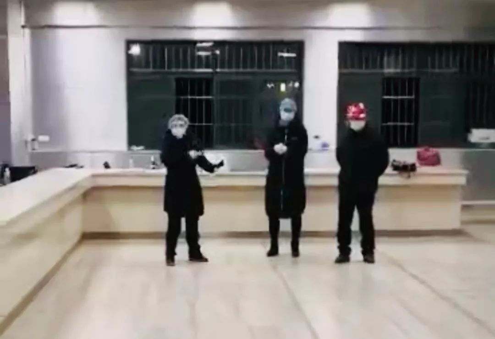
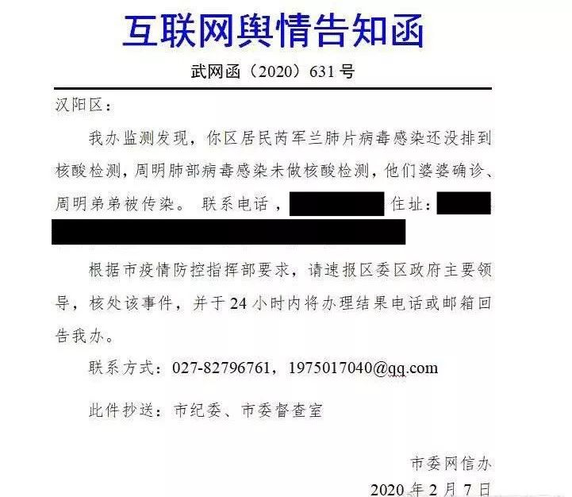

在人间丨一个武汉志愿者的焦灼：孕妇就诊流程到底是怎样的？
原文链接 备份链接 凤凰新闻客户端 凤凰网在人间工作室出品 1月22日，有一个叫卓明灾害信息服务中心的团队成立了nCoV志愿者联盟，发起人是我的朋友。 在这个大志愿者联盟里，有300多个在线医生，组成了一个综合各科在线治疗的团队；微信 …

痛苦和绝望中，梁述滔坠楼自杀。生命瞬止于 2020 年 2 月 10 日 14 时 57 分。
2 月 8 日 13 时至 15 时， 70 岁的梁述滔，曾独自哭嚎在铁门紧闭的社区服务中心，以求安排核酸检测。
罹患尿毒症，又因 1 月 27 日起疑似新冠肺炎后无法确诊，必须每周一次的常规透析，亦难以为继。
但梁述滔接到的社区（武汉硚口区古田街道罗家墩）解决方案，一直是——等。
法医鉴定后，梁述滔的尸体，至近 22 时才被运离。
此前的 21 时 09 分及 21 时 32 分，原武汉市委书记马国强，则在防控新闻发布会上强调：截止 2 月 9 日，已完成全民健康排查人数比 99% ；到 11 日，实现所有疑似患者检测的「清零」。
似为游离在官方数据外的「 1% 」，梁述滔之死引发的「重视」，不过是其同为疑似新冠肺炎病患的妻子，终于被武汉市普爱医院收治。
面对诸如此类的悲剧不断，人民日报（《国家人文历史》）于 2 月 4 日开通直报中央指导组的紧急求助通道。相关对接帮扶，则同步运运作于微博平台。
梁述滔的情况，以其妻求助的方式，既被反复报送，但最终未能及时落地于社区协调。
2 月 12 日，武汉市委机关报刊发评论：战「疫」不可压抑沉闷，更需「冲天豪气」。
而在求助通道中夹缝求生的「幸运」与否，正尖锐而冰冷地印刻下，区别于此的另一面——残酷现实。
一
1 月 27 日，梁述滔在湖北省中山医院硚口院区透析时出现发热症状， CT 显示疑似新冠肺炎。
由此，中山医院停止其 5 年来每周一次的「续命」透析。2 月 2 日，梁述滔辗转至武汉市普爱医院透析，但最为紧急的是新冠肺炎的确诊。否则，再无医院可满足其透析需求。
雪上加霜的是，此后，其 68 岁的妻子程小兰亦疑似感染新冠肺炎。家属被要求自我隔离且居住于不同小区，梁述滔夫妻只能不断与罗家墩社区沟通，催促联系核酸检测。
对重度尿毒症病患而言，透析切断意即「等死」。虽情况危急，但罗家墩社区的回复，仅为「已上报，走流程」。
梁述滔所在的广电·江湾新城居民，开始为其登记人民日报等紧急求助通道。
一直收集求助信息并转发呼吁的华东政法大学教授童之伟，知晓梁述滔情况后，即通过其微博（ID：童之伟）影响，进行舆论「施压」。
确认到太多病患因无法及时救治，从疑似到病重，甚至死亡后，童之伟深知唯有「等待」的揪心。
2 月 8 日，据最后一次透析已过 7 天的梁述滔，几无进食，虚弱不堪。
当他颤巍地借助轮椅，前往江湾新城内的罗家墩社区服务中心再度求援时，社区却闭门不见。

2 月 8 日，梁述滔在铁门禁闭的社区门外哭嚎
图片来源：受访者供图
无助到极限下，梁述滔在社区门外哭嚎近两小时。多有江湾新城住户对偶尔治愈表示，自始至终，未见相关工作人员接待或安抚。
自社区服务中心离去时，梁述滔已病重及悲愤至咳血。
2 月 9 日，「转机」突现。梁述滔家属接到罗家墩社区通知，古田街社区卫生服务中心可安排核酸检测。但当梁述滔赶到时，却被告知医生已离岗，推迟至 10 日早晨。
次日，依约定时间，梁述滔夫妻提前来到古田街社区卫生服务中心。候诊许久后，对接医生突然告知，缺乏检测所需的咽拭子。针对家属询问，罗家墩社区的解释是，得继续留待。
已大小便失禁的梁述滔无法再强撑。家属请求加急处理时，罗家墩社区则建议梁述滔夫妻先回家，等候通知。
但再无消息。直至 14 时 57 分，梁述滔自 9 楼跳下。
目击居民对偶尔治愈叹息道，梁述滔已行走困难，但撑翻过阳台护栏却「太快」。似是耗尽最后气力，「走得毫不犹豫」。
22 时，梁述滔家属再为程小兰入院问题与社区交涉。质问工作人员内心有无愧疚时，反复而用力地捶打着自己的胸口。

梁述滔自杀后，家属与社区人员交涉
图片来源：受访者供图
梁述滔的遭遇，引燃居民对社区不满情绪的爆发。
江湾新城住户对偶尔治愈表示，疫情防控至今，社区均未对小区进行过任何排查。每日公示数据，实来源于居民于附近医院自查后的反馈，除却重症和发热提示，无疑似统计。
此外，社区疏于管理下，一直未能安排小区内重症病患的入院。就志愿者自冒风险运送蔬菜进小区的行为，社区亦拒绝经办手续。
加之保安基本辞职，入室抢劫竟在疫情期间发生两起等，居民至今仍在与社区的不断交涉，甚至「对抗」中，紧张度日。

二
相比于梁述滔，同属硚口区的李国栋夫妇，或为紧急救助通道中的「幸者」。
但被收治过程，依旧焦灼而复杂。
1 月 27 日及 24 日，李国栋及其妻任芳华分别出现高烧和低烧症状。2 月 4 日，李国栋被确诊为新冠肺炎，医院告知需社区（宝康苑）协调床位住院事宜；任芳华则 CT 显示双肺多发（磨玻璃样）感染，疑似新冠肺炎。
李国栋确诊前，一直与宝康苑社区沟通住院安排，但几无进展。
2 月 5 日，李国栋的紧急求助信息经童之伟转发引起关注。
2 月 6 日午时，社区通知李国栋夫妇前往武汉会展中心方舱医院。但被方舱医院告知未修建完善，只能再回家中自行隔离。
2 月 7 日 20 时，李国栋夫妇再被社区通知，赶去方舱医院。22 时到达，排队协调至次日凌晨1时。
经方舱医院检查，任芳华可入住；但李国栋血氧饱和度已降至 77% ，属新冠肺炎重症，按规无法收治。
因均感染，李国栋夫妇拒绝家人的陪护；而丈夫又发展为重症无人照料，所以任芳华决定，放弃入住方舱医院。
针对李国栋夫妇的特殊情况，童之伟继续跟进。关注及求助信息，不断汇集于李国栋父母家属处。
8 日，基于舆情监测，宝康苑社区协调李国栋夫妇至武汉广发肿瘤医院，隔离留观。
但由广发证券实控的民营广发肿瘤医院，自 2 月 5 日被临时征用，导致癌症病患被清退后，一度陷入混乱。基本医疗条件均无法保障。

临时征用的广发肿瘤医院，并无医疗条件
图片来源：求助者微博
李国栋夫妇面对的，是无医务人员和输液能力的险况。
和童之伟相同，亦在整理紧急求助信息的读物博主莫非（ID：我不是谦哥儿），因友人关系，可将核查情形，直报中央指导组。
11 日，偶尔治愈将李国栋夫妇求助信息反馈于莫非，再次上报。
12 日，李国栋夫妇终被妥善安置。李国栋由定点武汉亚心总院收治，任芳华则入住方舱医院。
此外，「拥挤」于紧急求助通道里的，不仅是新冠肺炎病患。
居住于百步亭社区温馨苑的唐常安，于 2 月 4 日突发中风。头颅和肺部 CT 显示脑梗及感染。但只有确诊新冠肺炎与否后，方能考虑收治可能。
但百步亭社区却告知唐常安家属，每日上报检测名额仅有一名。
经紧急求助渠道的登记督促，百步亭社区虽开始安排相关医院隔离，但脑跟治疗均因新冠肺炎检测反复受阻。
于是，女婿陈堪便带着唐常安「住」进车里，每日四处寻求医院自救。休息时，则停靠在公厕旁，为方便洗漱。
2 月 5 日至 11 日，陈堪与病重的岳父，奔波于协和医院5次，航运总院和汉口医院 3 次，省中医药 2 次，紫荆医院、东湖医院、武大人民医院、中部战区总院、弘济骨科医院各 1 次。
最终，陈堪为唐常安争取到两次核酸检测，均显示阴性。但无一家医院愿收治脑梗。「错过黄金（救治）期后，只能再回家，通过药物保守治疗」，陈堪无奈道。

三
童之伟和莫非均体察到，每一次紧急救助背后，都存在病患和社区矛盾的激化。
综合居民对社区问题的反映，则集中于排查不到位，救助不及时；沟通无效率，调解无诚意。
2 月 11 日，环球时报发布报道称，经跟拍 2 月 9 日晚间，武昌区新冠肺炎重症病患的转移现场，发现「工作滞后、衔接无序、组织混乱」；且街道和社区工作人员无跟车服务，导致重症病患情绪失控，「做法十分恶劣」。
同日，武昌区政府领导前往同济医院中法新城院区重症监护病房，向新冠肺炎重症病患代表当面致歉。
但偶尔治愈多方了解到，行政强令下，社区的表现，其实差异明显。期间的无能为力，也在不断显现。尤其在涉及家庭式感染的严峻情况时。
莫非曾收到来自汉阳区汇福园社区工作人员的求助。求助信息显示：汇福园社区居民周明夫妇均显示肺片感染但未进行核酸检测；周明婆婆确诊新冠肺炎，弟弟则疑似感染，唯剩 19 岁的儿子安全，暂被隔离。
针对此，汇福园社区工作人员表示，虽已加急上报，但「等待上级排号很慢」。希望通过紧急求助通道，和微博舆论关注，尽快帮助周明一家进行检测和收治。
舆情发酵后，汉阳区收到武汉市委网信办的告知函，要求依照防控指挥部要求，速报区委区政府主要领导核查周明家庭感染事件，并于 24 小时内回复办理结果。

紧急求助引发舆论关注后，相关部门的督办介入
图片来源：求助者微博
于是，周明一家方被加急安排核酸检测。但遗憾的是，周明弟弟因不属于汇福园社区，未能及时检测治疗，最终去世。
汇福园社区知情人士对偶尔治愈表示，除却 7 名在职人员，上级琴断口街道，仅委派 2 名年龄均 60 岁左右的领导协助工作。上报信息，挨户送菜；安抚病患，协调住院等全部重压，均被强制承担。
此外，针对紧急求助信息，一旦网络扩散或上报至中央指导组后，解决方式即下发督办文件。但政策指令上，每个街道又只允许提供极少的加急名额。
而街道领导，又只会每天端坐在空调房开会，喊口号。所以，每当悲剧发生，民众的怨怒都直接指向社区，社区只能「背锅」到底。
本质而言，武汉自上而下均未构建起效率化的协调系统。莫非分析道，至今仍近乎「文件式办公」的情况下，来自防控指挥部的精细指令，街道人员根本无法执行。加之资源匮乏且布置混乱，相关主管部门和机构，来回推卸责任，「动不起来」。
前述江湾新城居民，即对偶尔治愈表示，最初为梁述滔寻求帮助时，社区让找街道，街道告知转至区，区则要求联系市长热线；市长热线则答复安排区逐级处理，最后再回到社区时，社区只能答复再次上报。
2 月 13 日，中共中央决定，上海市长应勇调任湖北省委书记；济南市委书记王忠林，调任武汉市委书记。

四
人事调整或将引发防控变动。童之伟和莫非，亦在希望紧急求助的减少，甚至不再需要。
至今，紧急求助信息汇总于网络平台的数据及解决占比，尚难统计。
偶尔治愈自人民日报志愿者热线了解到， 2 月 4 日至今，人民日报全媒体平台受理紧急救助信息几万条。
其中，仅经联系人王般若（ 13126806707 ）对接的微信及信息渠道，收集上报紧急求助信息即达 4000 余例；协助解决主动反馈的病患检测、入院需求 1000 余例。
此外，人民日报相关志愿者表示，希望武汉社区可主动与人民日报求助渠道对接，以及时上报紧急需求，共同提升工作效率。
当然，不管是志愿者，抑或童之伟及莫非，都经历着太多处理求助信息的过程中，被告知病患已经离世的失落。
而当被迫寻求紧急求助时，病患及家属，亦在承受着无法言说的压力。
童之伟说道，很多时候，求助病患接到社区承诺，加急安排检测或入院前，会被要求告知曾转发其求助信息的博主，先删除微博，消除舆论影响。
而莫非在核实到相关求助信息，为医务人员发出后，则忧虑道，紧急求助的密集，关键原因之一，也是因为疫情战役中一线医务人员的「折损」，导致医疗资源及时跟进的艰难。
2 月 14 日，国家卫健委公布全国医务人员确诊病例 1716 例（ 6 人死亡）。
与此同时，正如一处理求助信息的前线对接人士对偶尔治愈所言，疑似病例外，「危重非常多，超危重更多」——「所有人都在生扛」。
（李国栋、任芳华、莫非、陈堪为化名）

（主笔更多好文，可点击「阅读原文」）
撰文：左异
责任编辑：李珊珊
封面图来源：人民日报
_— Tips —_
我们的新书《生死之间》出版了
可识别下方图片中的二维码购买

偶尔治愈
to-cure-sometimes
——
记录人与疾病、衰老、死亡的
相处方式

偶尔治愈 | 常常帮助 | 总是安慰
左异
微信扫一扫赞赏作者 赞赏
长按二维码向我转账
受苹果公司新规定影响，微信 iOS 版的赞赏功能被关闭，可通过二维码转账支持公众号。
原文链接 备份链接 凤凰新闻客户端 凤凰网在人间工作室出品 1月22日，有一个叫卓明灾害信息服务中心的团队成立了nCoV志愿者联盟，发起人是我的朋友。 在这个大志愿者联盟里，有300多个在线医生，组成了一个综合各科在线治疗的团队；微信 …
原文链接 备份链接 社区是预防和分诊的第一道防线。如今，在前所未有的疫情冲击之下，在巨大的困难面前，社区和社区工作者们被潮水般的求助人群不断冲击，已到了难堪其负的境地。 △ 武汉街头，吴靖摄 1月23日武汉封城后，武汉某社区居委会书记张 …
原文链接 备份链接 ************************** *************▲************* 一家定点医院输液室里，坐满了输液的病人。（李福荣/图） 全文共*2678*字，阅读大约需要7分钟。 “住院 …
原文链接 备份链接 【财新网】（记者 高昱 萧辉）武汉一线已经有1102名医务人员确诊新冠感染，而湖北省全省的感染数1502例。这意味着在武汉和湖北，医务人员感染新冠占当地总感染人数的比例，至2月11日已经达到5.6%（武汉） …
原文链接 备份链接 2月10日凌晨，爷爷头七那天，我在隔离酒店给他点了三根烟，磕了三个头，求他在天之灵保护他深爱的奶奶。 文 | 吴美芬 大黄，是武汉当地一支乐队的乐手，今年26岁。爸爸妈妈因病走得早，他自小在爷爷奶奶身边长大。1月底，爷 …